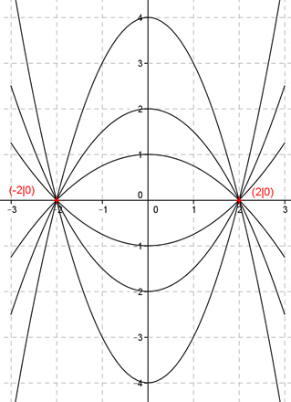

Aufgabe 6 Alle Graphen einer ganzrationalen Funktion 2. Grades gehen durch die Punkte (2|0) und (-2|0). Wie lautet die Funktionsgleichung dieser Kurvenschar? Allgemeine Form einer ganzrationalen Funktion 2. Grades: f(x) = ax² + bx + c f’(x) = 2ax + b f’’(x) = 2a 3 Bedingungen nötig - nur 2 Bedingungen gegeben --> keine eindeutige Funktionsgleichung --> es gibt eine Kurven- oder Graphenschar 1. Geht durch den Punkt (2|0) bedeutet: f(2) = 0 --> a * 2² + b * 2 + c = 0 --> 4a + 2b + c = 0 I 2. Geht durch den Punkt (-2|0) bedeutet: f(-2) = 0 --> a * (-2)² + b * (-2) + c = 0 --> 4a - 2b + c = 0 II I + II 4a + 2b + c = 0 4a - 2b + c = 0 ----------------- 8a + 2c = 0 |-8a 2c = -8a |:2 c = -4a c = -4a in I eingesetzt: 4a + 2b - 4a = 0 2b = 0 |:2 b = 0 Gesuchte Funktionsgleichung: f(x) = ax2 - 4a Darstellung für 6 verschiedene a. Vom Scheitelpunkt aus von oben nach unten: a1 = -1 a2 = -0,5 a3 = -0,25 a4 = 0,25 a5 = 0,5 a6 = 1 